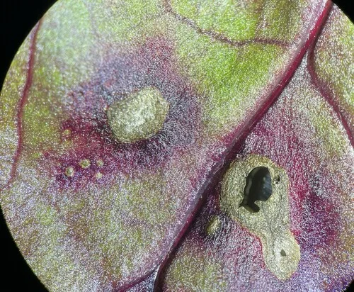
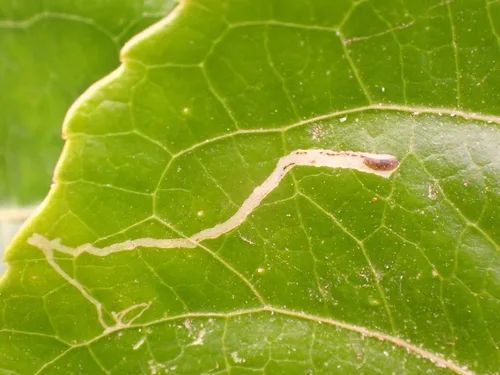
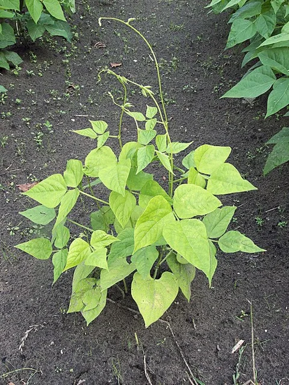
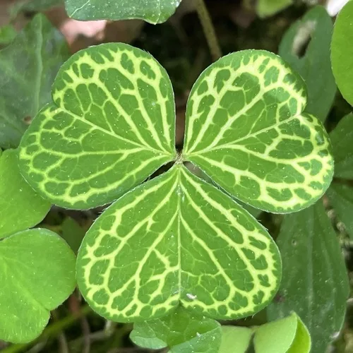
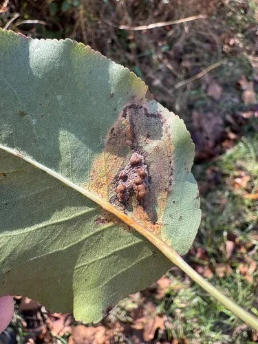
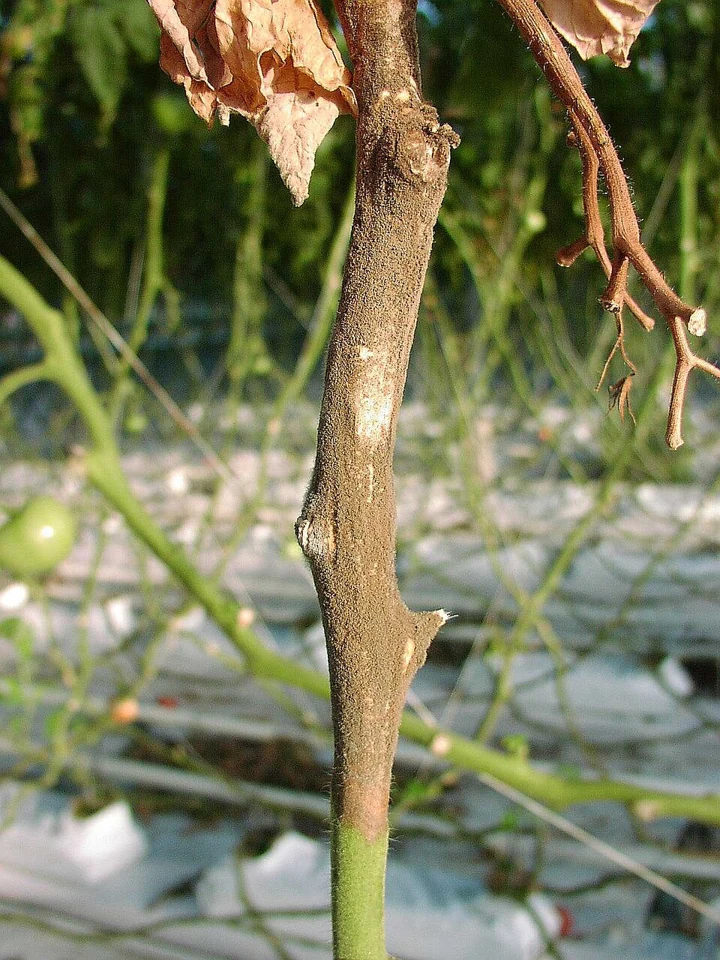

Leaf problems
 Brown patches on leaves
Brown patches on leaves
 Brown spots with yellow halos
Brown spots with yellow halos
 Fine brown speckling
Fine brown speckling
 Dry brown leaf tips
Dry brown leaf tips
 Black patches on leaves
Black patches on leaves
 Clusters of tiny black dots
Clusters of tiny black dots

Gray patches with dark rims Pale marks that stay the same size
Pale marks that stay the same size

Winding pale trails inside leaves Angular yellow patches bounded by veins
Angular yellow patches bounded by veins
 Scattered yellow or white spots
Scattered yellow or white spots
 Dense pale stippling
Dense pale stippling
 Shell-like bumps on stems or leaves
Shell-like bumps on stems or leaves
 Lower leaves yellow and wilt in dry soil
Lower leaves yellow and wilt in dry soil
 Lower leaves yellow in wet soil
Lower leaves yellow in wet soil
 A few older leaves turning yellow
A few older leaves turning yellow

Widespread leaf yellowing Yellow tissue between green veins
Yellow tissue between green veins

Yellow veins in green tissue Pale, stretched shoots
Pale, stretched shoots
 Soft, decaying leaves
Soft, decaying leaves
 Black, soft leaf margins
Black, soft leaf margins
 A few lower leaves drying out
A few lower leaves drying out
 Misshapen leaves
Misshapen leaves
 Raised galls on leaves
Raised galls on leaves
 Curling leaf margins
Curling leaf margins
 Twisted, reddish young leaves
Twisted, reddish young leaves
 Leaves rolled into tubes
Leaves rolled into tubes
 Caterpillars chewing foliage
Caterpillars chewing foliage
 Oval beetles and chewed leaves
Oval beetles and chewed leaves
 Snouted beetles and notched leaf edges
Snouted beetles and notched leaf edges
 Holes forming in brown spots
Holes forming in brown spots
 Wilting stems
Wilting stems
 White powder on plant surfaces
White powder on plant surfaces
 Cottony insects in leaf joints
Cottony insects in leaf joints
 A removable sooty coating
A removable sooty coating

Rust-colored spots and pustules
Gray-brown fuzzy growth on stems